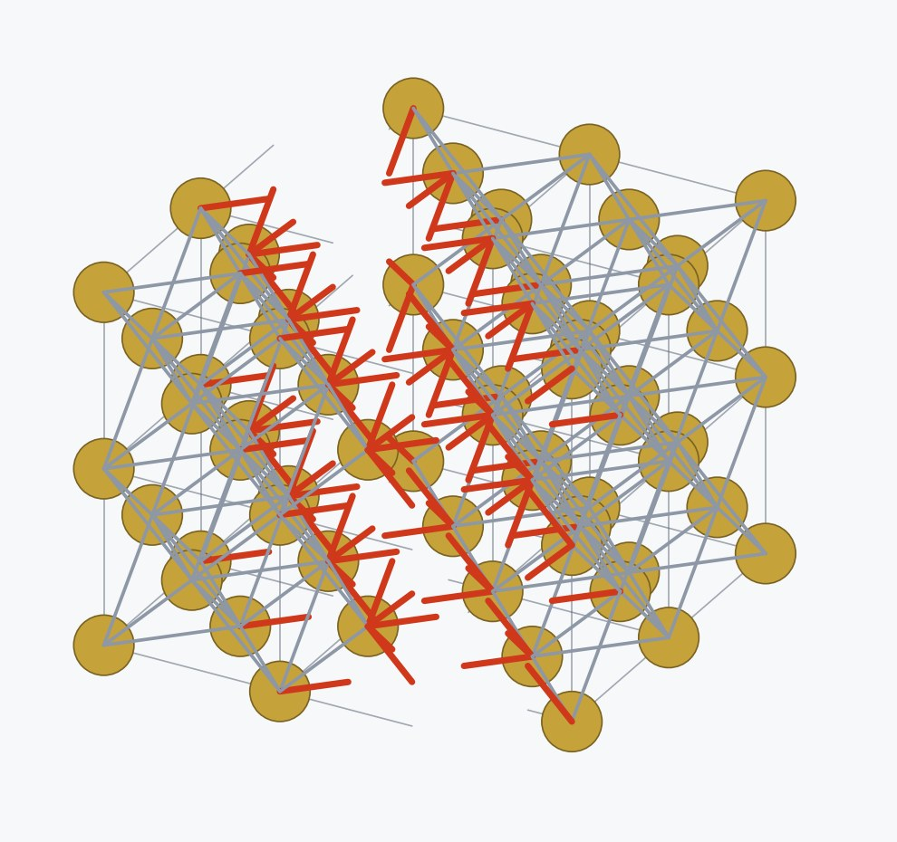
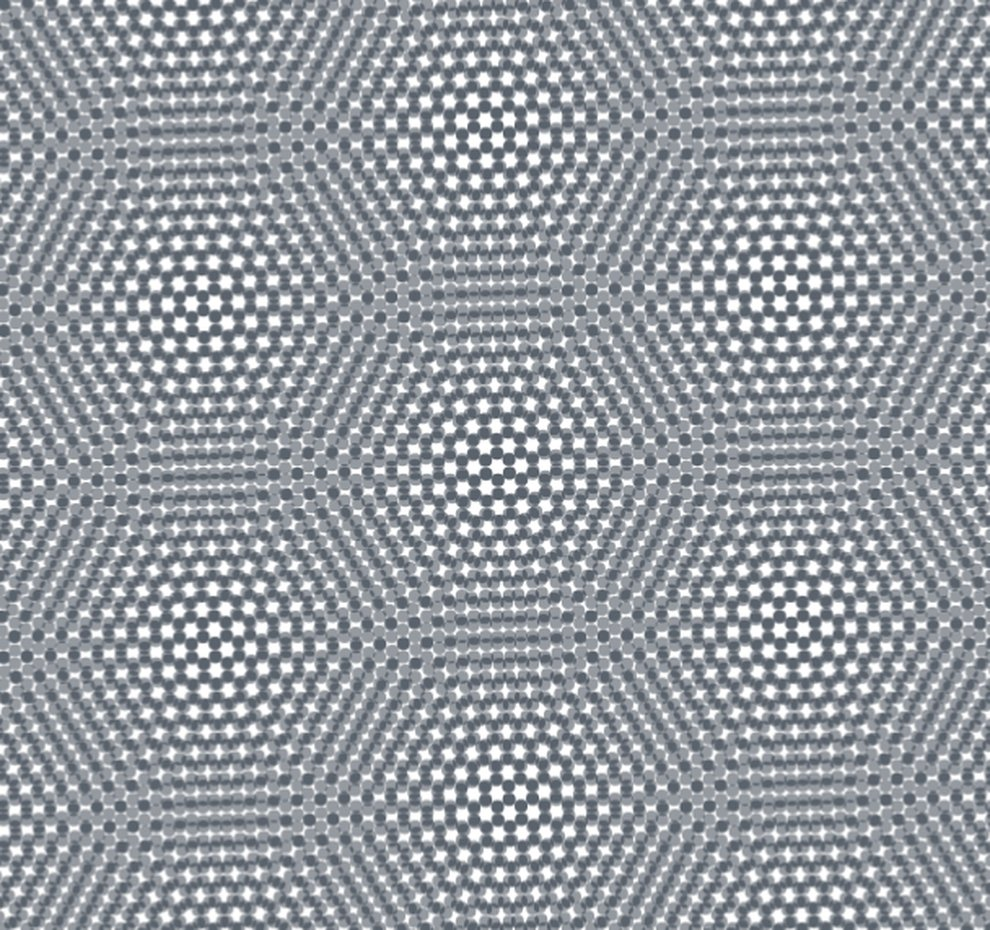
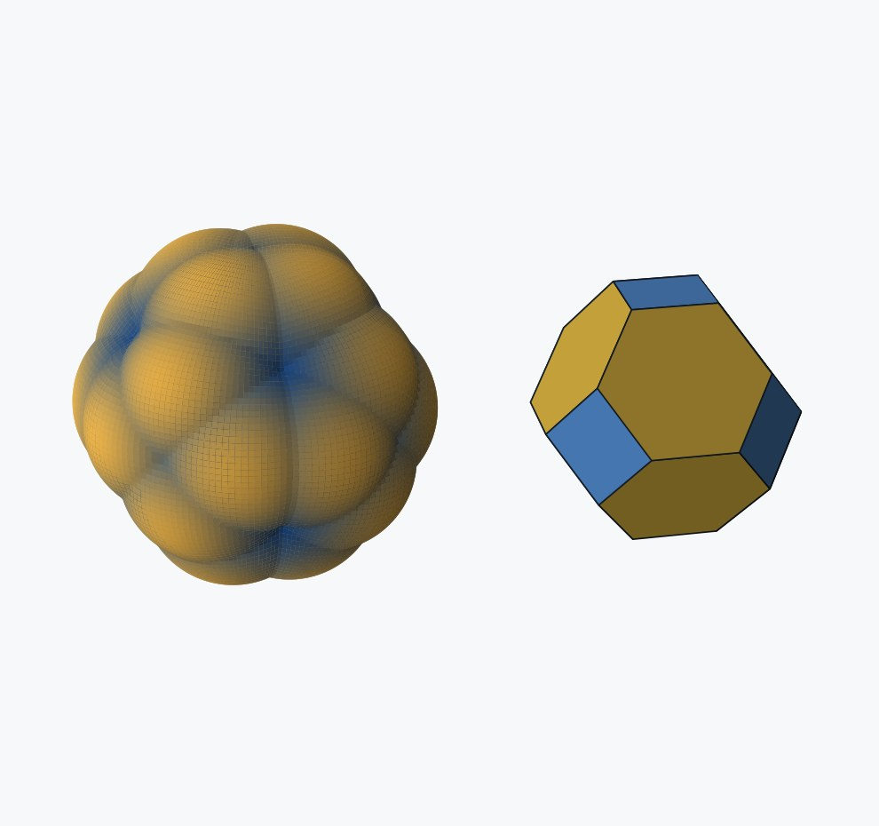
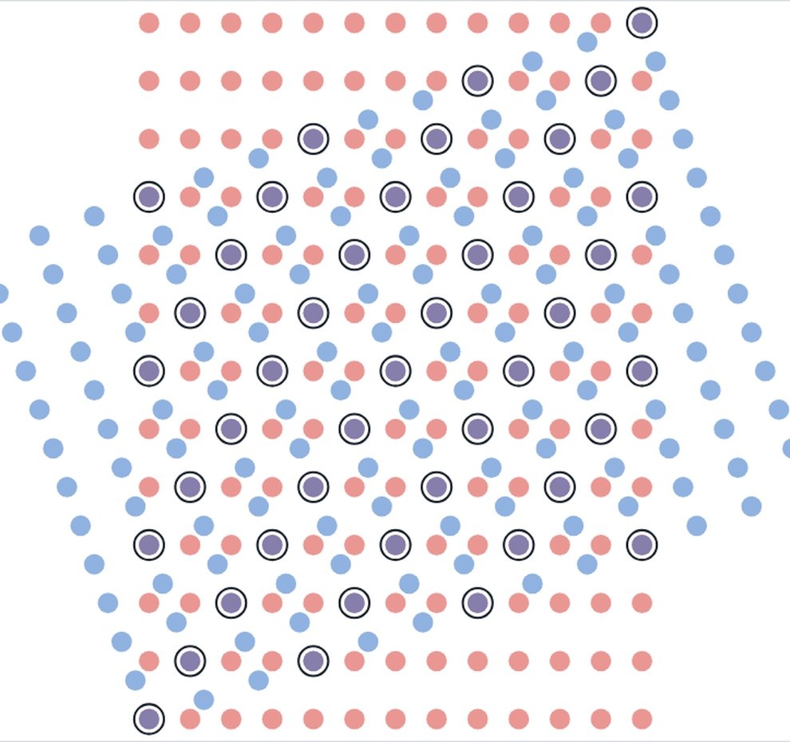
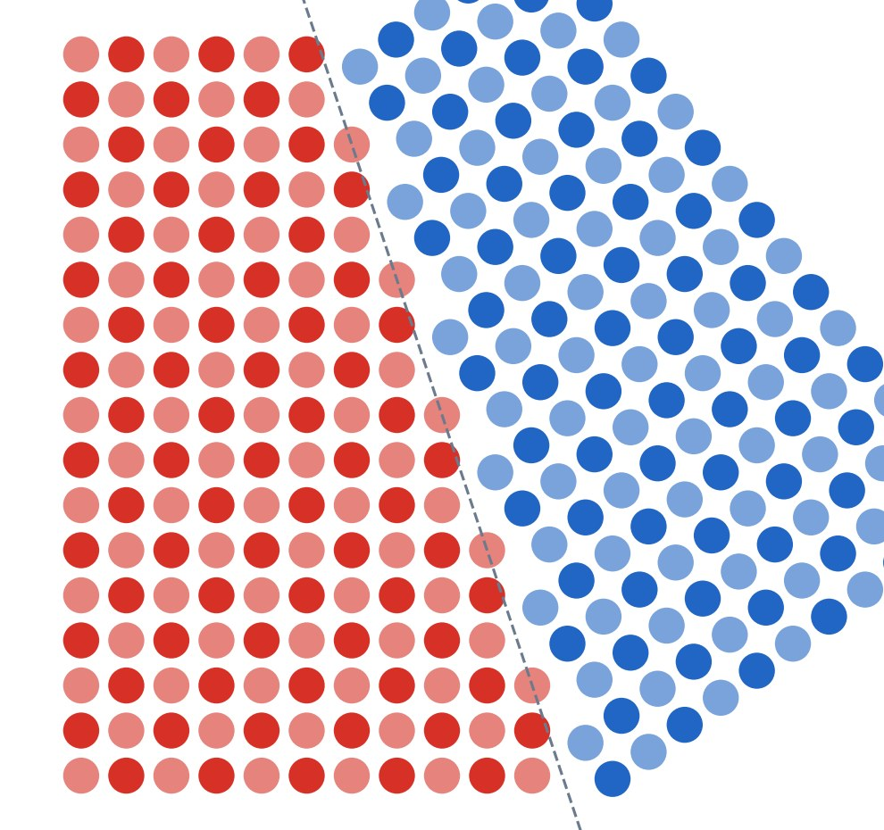
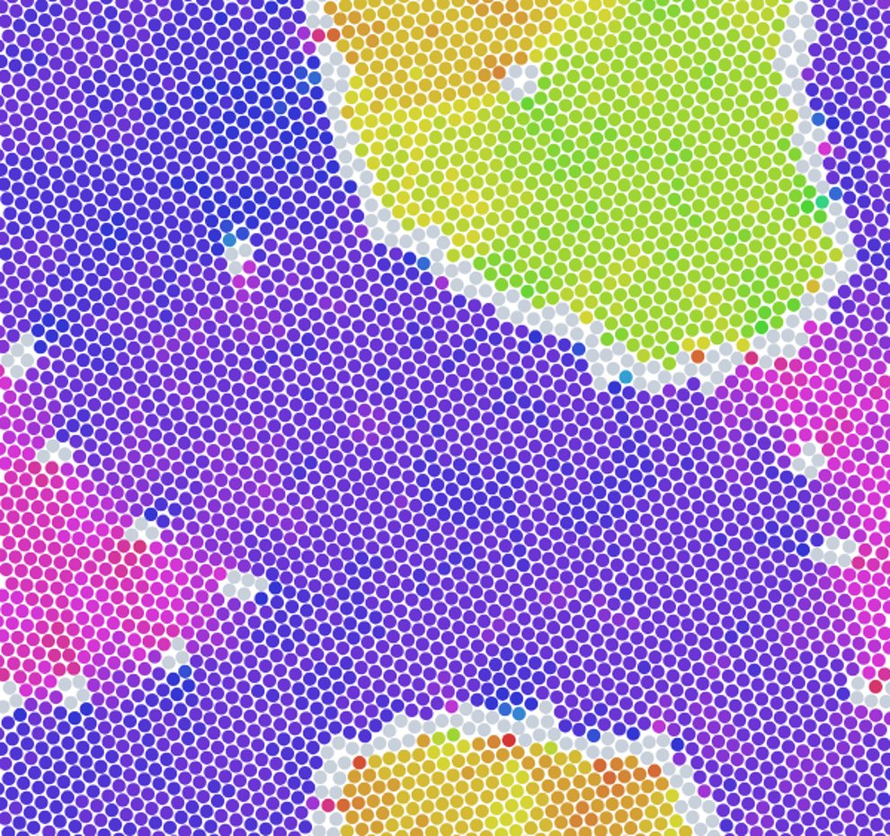

Interactive 3D models for the course. Each one opens in any web browser, on a laptop or a phone, with nothing to install. Drag to rotate, scroll or pinch to zoom.

Cleave an SC, BCC or FCC crystal along (100), (110) or (111). Pull the halves apart and every bond that crossed the cut turns into a red dangling bond.
Open model →
Twist one graphene sheet or Penrose quasicrystal against another. Change the angle in 0.1° steps and drag to slide the top layer.
Open model →
See surface energy in every direction as a 3D polar plot for SC, BCC and FCC, then switch to the Wulff shape it predicts: a cube, a rhombic dodecahedron or a truncated octahedron.
Open model →
Rotate one rectangular lattice against an identical fixed one. Set b/a, the angle and the atom size, and watch the coincident sites appear at special angles.
Open model →
Choose a rotation axis, rotate the second crystal, pick the cutting plane, and watch the halves join into a tilt or twist boundary, shifted so no atoms sit closer than the nearest-neighbor distance.
Open model →
Run molecular dynamics on a 2D Lennard-Jones crystal at a temperature you set, and watch boundaries move toward their center of curvature: a circular grain or a rod shrinks at a constant rate of area loss, and a polycrystal coarsens. The area history downloads as CSV.
Open model →